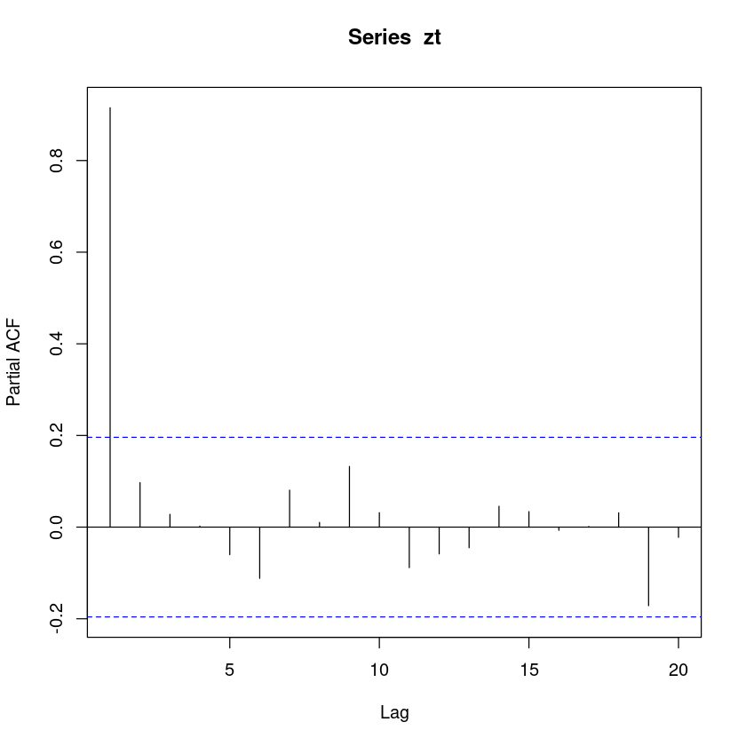

연습문제 5.3
아래와 같이 자료를 입력한다.
(a) 시계열 그림을 그려라.

(b) (a)의 시계열로부터 \(\rho_1\)은 양수, \(0\), 혹은 음수 중 어느 값이라 기대되는가?
\(\rho_1 > 0\) 일 것으로 기대함.
(c) \(Z_t\)에 대하여 \(Z_{t-1}\)의 산점도를 그려보고, 다시 \(\rho_1\)은 어느 정도의 값이 되리라 기대하는가?
- acf의 계수값은 regression을 한 coefficient의 계수값이라고 생각해도 된다.
(d) SACF \(\hat{\rho}_k, k=0,1,\dots,10\)을 구하여 표본상관도표를 그려라.
- 1
- 0.91514283237285
- 0.853266337927077
- 0.798375054409032
- 0.746598547202508
- 0.688437899511834
- 0.618941200705302
- 0.572652626007743
- 0.528666420762899
- 0.507320782302746
- 0.485274192476317
- 0.449732274009753
- 0.414716165196433
- 0.378867532330867
- 0.356953087806519
- 0.332744790957889
- 0.304122683010979
- 0.278542289685101
- 0.262531969561571
- 0.226429133053414
- 0.194780443141645

(e) \(Z_t\)에 대하여 \(Z_{t-2}\)의 산점도를 그려보고, 이 그림이 (d)에서 계산된 \(\hat{\rho}_2\)에 상응하는지 논하라.
(f) SPACF \(\hat{\phi}_{kk}, k=1,2,\dots,10\)을 구하여 표본상관도표를 그려라.
- 0.91514283237285
- 0.0970991636235123
- 0.0278031295172364
- 0.0023436840732835
- -0.0600699044140887
- -0.111745287421941
- 0.0806370704842164
- 0.0103045961231946
- 0.132408978544161
- 0.0315743336953914
- -0.088386730109637
- -0.0584577460737368
- -0.0449250521921251
- 0.0454941857858855
- 0.0338085090119136
- -0.00692664075719595
- 0.00155392924426564
- 0.0311171061759323
- -0.171366229465896
- -0.0224072170637755

(g) \(\hat{\phi}_{22}\) 의 의미를 진술하라.
교재의 설명: \(\hat{\phi}_{22}\)는 \(Z_t\)와 \(Z_{t+2}\)로부터 \(Z_{t+1}\)의 효과를 제거한 후 2차시만큼 떨어진 \(Z_t\)와 \(Z_{t+2}\)의 순수한 상관계수.
좀 더 엄밀한 정의
partial correlation (conditional correlation)
coefficients in the multiple regression model
(orthogonalization) partial regression coefficients
(방법1) \(lag=2\)에선 \(\text{SPACF}\), 즉 \(\hat{\phi}_{22}\)는 아래와 같이 구할 수 있다.
(방법2)
(방법3)
연습문제 5.5
model: \(Z_t = 1+0.9Z_{t-1} + \epsilon_t, \space t=1,2,\dots,100.\)
- 10.7776751561233
- 10.6609622856125
- 11.1299241242987
- 10.7296526182932
- 9.38278837110085
- 9.29109019895927
- 10.4122689883349
- 9.28067089058084
- 9.2789901605081
- 9.0501570067217
- 9.77713424796791
- 9.382743702739
- 8.80552070415711
- 8.57407176217217
- 9.66366581234691
- 10.008613208163
- 10.0576413774417
- 9.08897935853339
- 9.82764653363022
- 10.2218444148992
- 12.1704447684576
- 12.8681141018021
- 13.2367603965488
- 12.9391055984287
- 14.0648285969126
- 14.6894154466569
- 11.8745739061673
- 10.1171355506358
- 10.7362362555572
- 11.4278736905948
- 10.8704928947355
- 11.9263131810541
- 13.313631225092
- 12.1190229649772
- 13.0917495632854
- 11.5376226866627
- 13.5642568416322
- 12.8672694942753
- 12.3012258423447
- 12.7469345900269
- 13.4507736238183
- 14.6673849854053
- 13.4116727284831
- 15.3076736011676
- 14.310806695614
- 13.1222429226028
- 13.0875104346435
- 11.1517386419
- 12.5003171167307
- 12.134043120466
- 12.2162396641911
- 13.2946087354648
- 13.2366898509952
- 13.2061567161538
- 13.783242311133
- 12.7466777939187
- 12.1071555541528
- 11.2869817913499
- 10.7095254338173
- 10.3660192453498
- 8.19741429242647
- 9.07563267311609
- 8.34939290557436
- 9.30553314042619
- 7.43977450826777
- 8.19004274210617
- 8.54662906416369
- 8.69613491505516
- 10.7738789590646
- 10.5915715594163
- 10.3945561629718
- 10.9027471497513
- 9.77026311751489
- 10.1223165078856
- 10.469192739694
- 9.58771700080272
- 9.32100352879754
- 8.7135344295127
- 6.86349437174187
- 8.10294090902059
- 7.68102522415767
- 7.30921467667611
- 4.91584446653772
- 5.59736306277825
- 6.57778433680285
- 7.03791396797598
- 7.51873623749475
- 6.66901822423143
- 4.46500939137639
- 5.51430833462341
- 7.44595964893556
- 6.22242514118676
- 4.74081983358706
- 5.29462908147751
- 5.99127876210288
- 5.19673221133857
- 6.50505386512762
- 6.6438975765325
- 7.95816370026611
- 9.1357435140494
- 1
- 0.91514283237285
- 0.853266337927077
- 0.798375054409032
- 0.746598547202508
- 0.688437899511834
- 0.618941200705302
- 0.572652626007743
- 0.528666420762899
- 0.507320782302746
- 0.485274192476317
- 0.449732274009753
- 0.414716165196433
- 0.378867532330867
- 0.356953087806519
- 0.332744790957889
- 0.304122683010979
- 0.278542289685101
- 0.262531969561571
- 0.226429133053414
- 0.194780443141645

- 0.91514283237285
- 0.0970991636235123
- 0.0278031295172364
- 0.0023436840732835
- -0.0600699044140887
- -0.111745287421941
- 0.0806370704842164
- 0.0103045961231946
- 0.132408978544161
- 0.0315743336953914
- -0.088386730109637
- -0.0584577460737368
- -0.0449250521921251
- 0.0454941857858855
- 0.0338085090119136
- -0.00692664075719595
- 0.00155392924426564
- 0.0311171061759323
- -0.171366229465896
- -0.0224072170637755